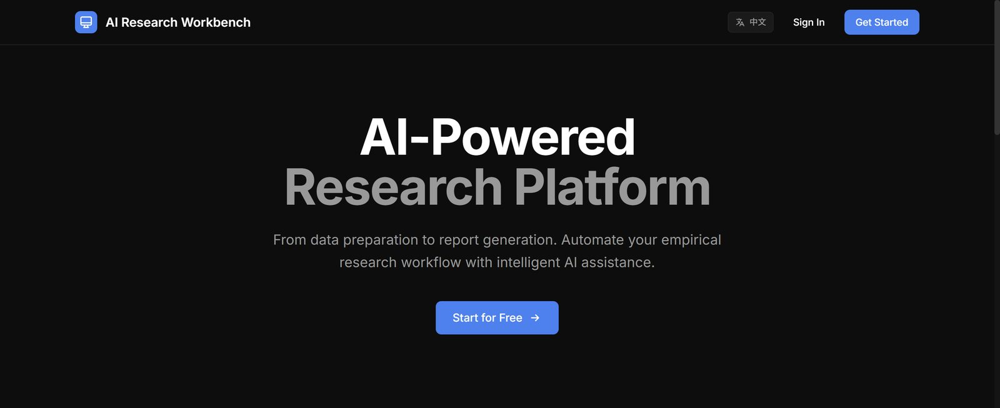
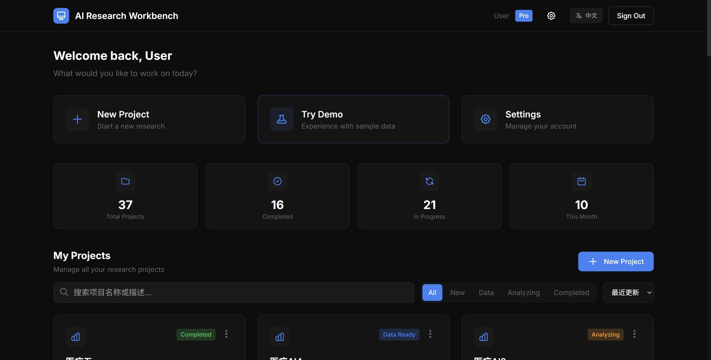
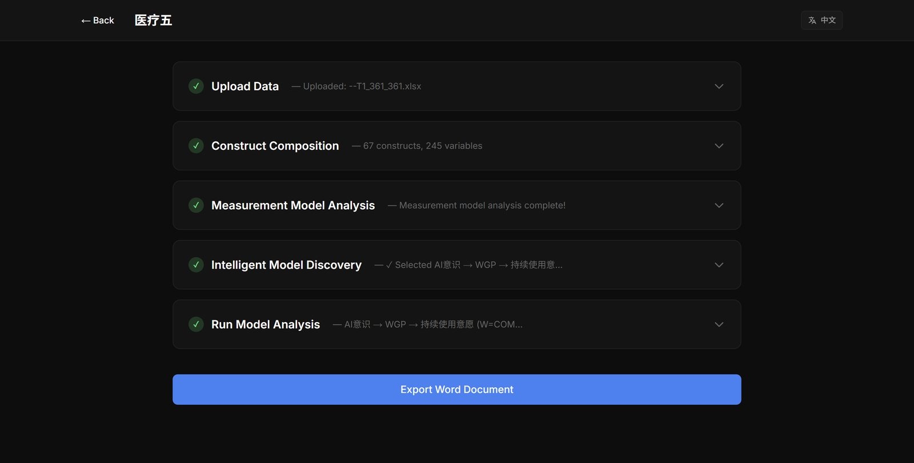

AI 实证研究平台
独立完成从数据库设计、后端 API 到前端页面的完整全栈交付。集成多 Provider LLM，支持构念自动识别与 SEM 穷举建模，生产环境稳定运行。

订阅分级权限
JWT 鉴权 + bcrypt 加密，API 层拦截未授权请求
LLM Provider 统一封装
DeepSeek / Gemini / OpenAI 统一接口，构念识别与 SEM 建模
数据库版本迁移
Prisma migrate 管理 PostgreSQL，生产环境不停机
01背景与挑战
学术实证研究需要反复调用多个 LLM Provider 进行构念识别与 SEM 建模，同时需要安全的用户权限体系和可追溯的数据库版本管理。
"单一 Provider 稳定性不足、手动建模效率低、缺乏用户分级权限——需要从零构建一套生产可用的全栈研究平台。"
项目从零开始，独立完成后端 API 设计、数据库建模、多 LLM 封装、前端数据可视化与生产部署的全链路交付。
02技术设计
用户权限体系
JWT 无状态鉴权、bcrypt 密码加密，FREE / PRO 订阅分级，API 层统一拦截未授权请求。
多 Provider LLM 集成
DeepSeek / Gemini / OpenAI 统一封装，实现构念自动识别与 SEM 穷举建模，指数退避 + Fallback。
数据库版本管理
PostgreSQL + Prisma migrate 管理数据库版本，生产环境不停机迁移，自动生成 Swagger / ReDoc API 文档。
数据可视化与导出
Next.js + Recharts 前端，SEM 路径图可视化，支持一键导出完整实证研究报告（Word 格式）。


03项目成果
从数据库设计到前端可视化的完整全栈交付，独立承担产品设计与工程开发，生产环境稳定运行，真实用户可访问。
完整权限体系
FREE / PRO 双级订阅，JWT 鉴权，bcrypt 加密，API 层细粒度拦截。
SEM 穷举建模
LLM 自动识别构念，穷举假设关系路径，生成完整 SEM 拟合报告。
Swagger 自动文档
FastAPI + Pydantic 校验所有请求数据，自动生成 Swagger / ReDoc 文档。
一键报告导出
平台一键导出 Word 文档，含构念识别、测量模型、SEM 路径等完整实证流程。